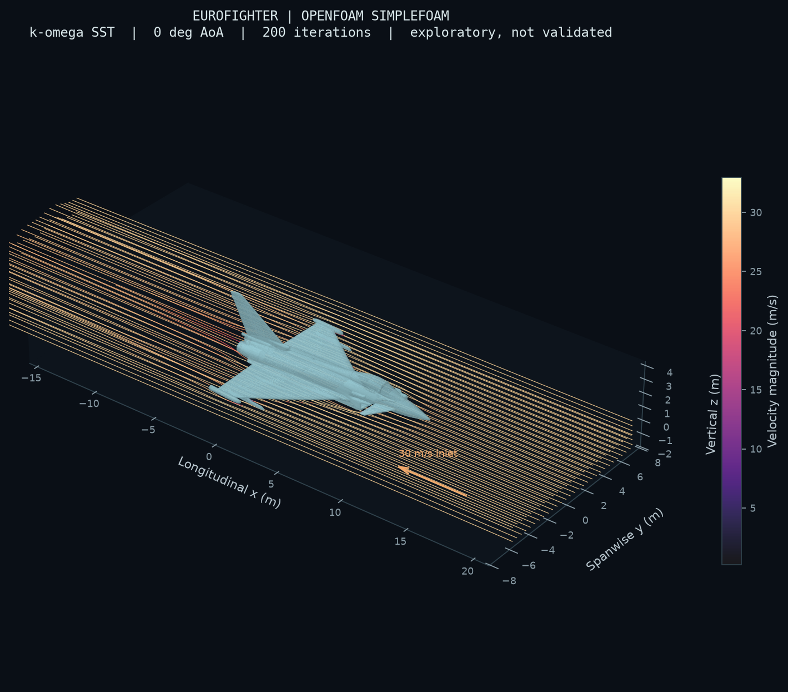

External-flow post-processing
I turn sampled VTP streamlines and an indexed aircraft mesh into a static image and an interactive 3D visualisation.
Make a large CFD sample inspectable in a browser
I wrote a post-processing workflow for OpenFOAM streamline samples stored as VTP files. It reads the samples, associates velocity magnitude with each point, and renders coloured line segments around an aircraft surface.
I also built an indexed mesh bundle from an STL. Before rendering, my viewer reconstructs the surface from quantised grid coordinates, origin, step size, and face indices.
In the VTP reader, I decode the point coordinates, line connectivity and offsets, and the velocity vector array. I split the connectivity into individual polylines, calculate speed from each velocity vector, and carry the sampled values into the renderer so that colour is attached to the local streamline segments.

Decode, map, and render
My Python renderer exports a PNG and an optional compressed JavaScript bundle for the interactive viewer. I generate the aircraft mesh bundle separately with CFD/build_mesh_bundle.py.
To make the surface practical to load in a browser, I weld duplicate STL vertices, quantise their coordinates, keep indexed triangle faces, and gzip the compact payload. The viewer can then reconstruct the mesh without loading the original large STL, while the streamline data remains a separate bundle.
Open the interactive CFD viewerRecord the run conditions alongside the picture
- I ran OpenFOAM
simpleFoamas an incompressible, steady RANS case with k-omega SST. - My demonstration inlet was 30 m/s at 0° angle of attack, with air density set to 1.225 kg/m³.
- I saved 62 streamlines from two spanwise seed planes using a mesh of 54,815 cells.
Do not read this image as aerodynamic validation
My stored 200-iteration run is incomplete for engineering conclusions. checkMesh reported 3,006 concave cells and failed a mesh check. I have not validated the geometry, mesh, turbulence setup, or convergence against trusted aerodynamic data.
I use this visualisation only for file handling, mesh presentation, and post-processing development. I do not use it to make design decisions, flight-performance claims, or comparisons with certified aircraft data.
Visual clarity does not replace solution quality
I can make a flow field easier to inspect with a clear 3D rendering, but the mesh-quality failure and limited iteration count remain central to interpreting it. My next engineering step is to repair and validate the case, not infer performance from the image.
Next case study: VLMPy →